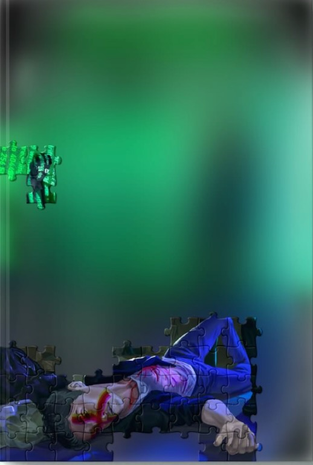

// case_file: 0x000
0xDEAD: КОД СМЕРТІ
Колишня кіберзлочинниця та наркозалежна Аліса намагається почати нове життя, але коли її давнього колегу знаходять мертвим, вона стає головною підозрюваною. За нею стежать, старі гріхи повертаються, а єдині, хто, може, знати правду її тогочасні спільники. Але чи варто довіряти тим, хто вже одного разу її зрадив? Особливо, коли серед них той, кого вона колись кохала. Щоб дізнатися правду про смерть друга та врятувати себе, Аліса змушена повернутися туди, де довіряти смертельно небезпечно, а наступною може бути вона.

// 01 — terminal.exe
Підключення до мережі
Кожен рядок коду тут — слід, залишений кимось живим. Підключись до мережі книги і відчуй її атмосферу на власній шкірі: введи help, щоб побачити доступні команди.
// 02 — dossier/syndicate
Досьє угруповання
Особові справи, зібрані поліцією на членів синдикату. Лінії показують зв'язки між ними — суцільні підтверджені, пунктирні під питанням. Натисни на теку, щоб відкрити файл.
// 03 — archive/
Класифікований архів
Холодне сховище поліції: докази у справі проти угруповання. Відкривай у будь-якому порядку — коду тут немає, бо нічого не заблоковано.
Україна
Обери місто на карті, щоб наблизити його.
// 05 — access_request.sh
Де купити
СИСТЕМА: маркетплейси ще компілюються. Приблизний час очікування — до релізу.
(посилання з'являться тут, а не в жарті, коли книга вийде з підпілля)